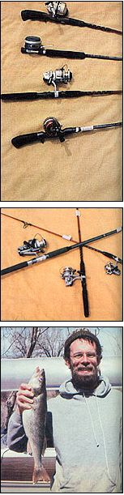

A Dozen Tips For Fisherfolk
By Randy Kidd
March/April 1981
This spring, take abreak from your gardening chores and spend a relaxing ( and productive!) day by the water!
By Randy Kidd
Now and then we all encounter those "perfect" days when the only sane thing to do is hang up a sign (on the front door, at the shop, or even in the barnyard!) that says, "Gone Fishin' ". I've heard many an old-timer proclaim that a few hours spent at the lake or stream will keep a person away from psychiatrists' couches and doctors' offices, and even I know that the piscatorial pastime can also provide some of the most delicious food ever to land on your plate. After all, no matter how "fresh" the iced fish at your local market may profess to be, it can't compare with the flavor of a straight-from-the-stream fillet!
There's a good bit more to fishing, of course, than simply catching fish . . . but a stringerful of tasty eating is bound to make a woodsy afternoon spent by, on, or in the water a mite more justifiable and a darn sight more exciting. And the following tips (the second installment of which will appear in the next issue of MOTHER) are calculated to help even the "never tried it before" fisherperson be successful!
I. FIND A FRIENDLY FISHING FANATIC
The quickest - and most enjoyable - way to learn how to fish is under the guiding "fin" of a friendly, successful "pro". Anglers, you see, are a gregarious lot . . . most of them love to hang out in bait shops, sporting goods stores, cafes, coffee shops, bars, or anywhere there's a gathering of folks to listen to their fish tales. So your task is to locate such a gathering place, then take aside the person who tells the best-sounding lies, and inquire whether he or she would mind (perhaps in exchange for a cup of coffee or a bottle of beer) showing you the ropes.
Good fisherfolk are an almost universally friendly and helpful bunch (particularly when properly flattered and bribed). And chances are your chosen guru goes fishing so often that he or she is continually looking for partners . . . especially since many experienced anglers may shy away from accompanying real "catch 'em every time" folks for fear of being outfished!
II. EQUIPMENT AND HOW TO USE IT
Today - regardless (it seems) of how much or how little money you have to spend - it's more difficult to find a fishing rig that won't work than it is to locate one that'll do a good job. There are, however, large differences in quality among various rods and reels, and I recommend that you pick the best equipment (within your budget) that'll meet your specific needs.
There are four basic kinds of reels: fly casting (manual and automatic), bait casting, spinning, and spin casting. Rods are built to work best with one of these four types.
While the work of an "ace" bait or fly caster can be pure poetry in motion, the novice will probably feel like a ten-thumbed klutz if he or she tries to imitate such a performance. Therefore, it's best not to attempt using either one of these rigs until you've gotten a little experience with spinning or spin-casting reels under your belt.
When the bail mechanism on a spinning reel (a spring-loaded "arm" that holds the line in place) is released, you see, it allows the synthetic monofilament line to free-flow off the open end of the spool with very little resistance, a fact that allows even the rankest beginner to quickly learn how to cast lightweight lures or baits with such a rig. The same is true for a spin-casting reel, which is nothing more than a closed-face spinning reel that permits the line to be released at the press of a convenient-to-the-thumb button. In addition, a spin-casting reel is usually mounted on top of its rod, while the spinning reel is placed underneath.
Some folks say that the spin-casting reel is a tad easier for a freshman fish forager to learn to manage, but the spinning reel isn't difficult either. . . and since its spooled line is always in view, it allows the user to be sure that everything's in order (and that there are no tangles on the spool) before each cast.
A "quality" reel - whether it's the manually operated, bail-type spinning reel or the thumb-button-type spin-casting reel - should release the line easily from the spool and then, after being "engaged" with a smooth turn or two of the handle, should readily take it up again. Make sure, too, that getting to the reel's gears for cleaning and lubrication is a simple chore involving no more than three or four screws.
A quality reel will also have an easily adjusted drag system. This mechanism consists of a series of alternating metal and soft composition washers that, when forced together by a manually tightened spring, create friction and increase the pressure a fighting fish would have to exert to draw line from the reel. A properly adjusted drag will, with the line tied to a stationary object and the rod lifted, curve the pole into its best fish-fighting bend - neither too straight nor too far flexed - before releasing any line.
There're so danged many rods on the market that it would take an entire article to do no more than identify them, but I can supply a few buying tips that should help you and your pocketbook.
To begin with, don't worry too much about what material the rod is made of. A good rod - whether of graphite, fiberglass, or something else - should catch fish for a lifetime, if you don't abuse it.
In addition, be aware that there are specialty rods available for nearly any conceivable species of fish and almost every angling condition . . . and there are some reels that will fit only a particular make (or, more often, type) of pole. Therefore, you must match the rod to the reel. Furthermore, each rod's "action" (a combination of its flexibility and the point at which the center of the sharpest bend occurs) is made to be used with a certain strength or weight of line. (Newer models often have their suggested line weights printed right on the rod.)
Your fishing pole's grip should look like a functional part of the unit . . . not like an afterthought. When held, the rod should feel balanced, and its tip should have an action that's flexible without being floppy. (You'll learn absolutely nothing from the salesperson's ploy of grabbing the rod and bending it double . . . except - if he or she pushes the demonstration too far - the material's maximum tensile strength.)
Finally, try to find a rod with guides made of a hard material (carbide steel or ceramic, for example) that won't be scarred by the wear of the line. And make sure the guides are securely mounted on the pole with plenty of sealed wrapping.
A good compromise rod for a beginner would be a 6-1/2' to 7' medium-action spinning (or spin-casting) pole made to be used with 8- to 12-pound-test line.
When you've obtained the best rig your budget can buy, practice in the back yard (using one of the rubber lures sold for this purpose by discount houses and sporting goods stores) until you can - with ease - cast overhand, sidearm, and underhand. And learn all the different casting "angles" you can! If you don't, it's practically guaranteed that the very best fishing hole on any given day will be accessible only with the kind of difficult-t-olearn backhand, underhand cast that you put off practicing!
III. SUIT THE BAIT TO THE FISH
It doesn't necessarily follow that the most expensive store-bought lure will catch the most fish . . . but it's true that the fanciest-looking one (which usually is the most expensive) will hook the most fisherfolk. The fact is, if you're angling in the right place at the right time, you'll catch fish on any lure or bait that resembles your prey's natural food.
For starters, limit yourself to a few inexpensive lures and learn how (and when) to use them well, before you try out fancier (and costlier) fish-getters.
Besides, most hungry fish can't turn down a plump worm, and you can dig the wigglers, for free, in your barnyard . . . near your compost heap . . . or from underneath the rabbit hutches. You might also want to collect night crawlers in the dark hours after a rainfall. Conduct the hunt with a flashlight, and when you see one of the fat and juicy fish dinners, simply reach down and squeeze-hold before it can slip back into its earth-sheltered home. Then gently lift it up and plop it into the bait bucket.
Keep in mind, too, that - with a few exceptions - big fish feed on little fish. A minnow seine is relatively inexpensive (about $1.00 per foot for a good nylon-mesh unit) and will allow you to gather all the bait fish you'll ever need from shallow pools in creeks or rivers and along lakeshores. The minnows will stay alive for several hours if kept under water in a bucket that has a number of small holes punched in its sides and bottom. And when your leftovers do expire, simply freeze them for use on your next trip . . . since frozen offerings will sometimes catch nearly as many fish as will fresh ones.
To create an irresistible dinner for the sort of finny creatures who locate their food by smell (catfish, for example), let a tightly capped jar of frozen-and-thawed minnows sit overnight, and then either use them as they are or soak a small piece of sponge - impaled on a treble (three-pronged) hook - in the aromatic, oily brew.
In other words . . . when it comes to bait, think natural. Any kind of worm, bug, insect larva, salamander, or crawdad that you can lay your hands on might very well be the most effective bait of the day. All you need to do is turn over a rock or log and be quick-of-hand. And, if you gather such bait near your fishing spot, the resident fish are probably already using it as a food source.
Along with your worms, minnow seine, and a handful of jigs and spinners, don't forget to take a stringer (for all the fish that you're bound to catch), plus any required fishing licenses. (Check with your sporting goods store for information on licensing.)
IV. THINK LIKE A FISH . . . FISH LIKE A PRO
To be a successful fisherperson, you'll need to know where the fish will be . . . when they'll be there . . . and why. Once you learn the habit patterns of your quarry, you'll be able to drop a line exactly where the fish are, when they're good and hungry. The following list (prepared with the help of Chuck Bever, fisheries biologist of the Kansas Fish and Game Commission) will give you pertinent information on some of North America's most commonly caught fish.
BLUEGILL ( Lepomis macrochirus )
[1] How to: pole and line. Cast or stillfish with a floating bobber. An ultralight rod (usually a relatively short spinning or spincasting rod with a very limber action) and light lines (2- to 6-pound test) will make the catching more fun.
[2] Bait: small worms, very small minnows (an inch or so long), crickets, jigs (small lures bounced up and down in the water), tiny spinners, etc.
[3] Times and places: throughout the late spring and summer. The spawning season (which will occur within this period, though the precise time will vary with water temperature) is best, since the fish will attack any food near their spawning beds. Mating areas are usually located in shallow water . . . either within weed beds or upon carefully prepared circles of pebbles. Once they've spawned, bluegills will hang around underwater structures (sunken trees, etc.) and in sheltered coves. In winter, they tend to school near such obstructions.
CARP ( Cyprinus carpio )
[1] How to: pole and line. Still-fish from the bank. Carp often grow rather large, so a heavy (10- to 20-pound-test) line and a stout casting, spinning, or spin-casting rod will probably be needed.
[2] Bait: worms, doughballs, corn, prepared bait. (See "The Fine Art of Stalking the Wild Carp", MOTHER NO. 33, page 99, for information on taking carp with bow and arrow.)
[3] Times and places: spring through summertime . . . in slow-moving rivers, mud flats, streams, ponds, and lakes.
CHANNEL CATFISH ( Ictalurus punctatus )
[1] How to: pole and line. Fish on the bottom of rivers, etc. Thread your line through a slip sinker and add a swivel or bead below the weight to keep the sinker from sliding onto the hook. Attach one or two hooks to the end of a 12-18" length of line fastened below the sinker.
[2] Bait: worms, minnows, shad, small fish, prepared bait, frogs, crawdads, etc. (Remember, catfish usually smell out their food.) Use large hooks (from 4 to 00, depending upon the size of catfish present).
[3] Times and places: springtime in rivers, creeks, and shallows . . . summer in creeks, lake channels, and mud flats.
CRAPPIE( Pomoxis annularis, P. nigromaculatus )
[1] How to: a light (2- to 6-pound-test) line and an ultralight pole. Jig, cast, or use bobbers.
[2] Bait: jigs, worms, crickets, minnows (used with or without a bobber), small spinners.
[3] Times and places: best in springtime. Crappie spawn along rocky shorelines and underwater structures . . . during the summer, they can often be found around brush piles or half-submerged standing timber. The males go to the spawning areas first . . . so if you're catching only "boys" (they'll have no yellow egg sacks when you clean them), you'll know the big run is yet to come.
LARGEMOUTH BASS ( Micropterus salmoides )
[1] How to: pole and line. Cast, troll (pull a baited lure behind a slowly moving boat), or use a bobber. Since bass are usually found in and around underwater stumps, etc., a heavy line (6-pound test or better) and stout pole (with a stiff action) are best.
[2] Bait: jigs, spinners, other artificial lures, worms, minnows, frogs, crawdads, salamanders, or other natural foods.
[3] Times and places: around standing timber and brush piles and along weed patches during sunny days. Farm ponds sometimes provide excellent bass fishing. Most largemouths spawn - on beds similar to those prepared by bluegills - in the spring, but many seem to keep at it throughout the summer, and they generally don't feed (and shouldn't be molested) while spawning.
WHITE BASS ( Roccus chrysops )
[1] How to: pole and line. Cast, jig, or troll.
[2] Bait: jigs, spinners, small lures, minnows.
[3] Times and places: spring and summer. The spawning run takes white bass up streams, along shorelines, and across the faces of dams . . . looking for places where water moves over a rocky bottom. After the spring spawn, schools can be located by trolling . . . or you can watch for swarms of birds feeding on smaller fish that the bass have frightened, or churning water caused by bass in a surface-feeding "frenzy".
RAINBOW TROUT ( Salmo gairdneri )
[1] How to: pole and line. In small, clear streams, a quiet approach to the water and a gentle lure presentation are needed. Try casting or still-fishing with a very small slip sinker.
[2] Bait: worms, minnows, packaged salmon eggs (Pautzke's brand is good), grasshoppers, small spinners on tiny No. 12 to No. 14 hooks. Most stocked trout are less than 12 inches long. If you have larger fish in your area, use larger hooks. Trolling is a good technique to catch the bigger specimens in lakes and reservoirs.
[3] Times and places: spring, early summer, fall, winter (through the ice). Fish the edge of moving water, under stream banks, near rocks or brush.
WALLEYE ( Stizostedion vitreum )
[1] How to: pole and line. Drift, cast, or troll.
[2] Bait: worms, minnows, jigs (with or without a trailing worm), artificial lures (especially "flatfish" types or Dardevle spoons).
[3] Times and places: springtime on through fall. Walleyes spawn in approximately 10 to 12 feet of slowly moving water. After the early spring spawn, they have another "binge" when the water temperature hits about 65 to 75°F.
 Photos by the Author (Top) A mess of white bass is a fine reward for spending a lazy, relaxing day enjoying nature's bounty. . . . (Above) A beginning fisherperson catches her very first crappie. |
 Photos by the Author (FROM TOP) Rods are built to work best with one of the four basic types of reels. Shown here, they are (from top to bottom) spin casting, fly casting, spinning, and bait casting. . . . Spinning outfits are available in a number of different weights, as shown in this photo. . . . This walleye (or yellow pike) will make a downright delicious meal! |
|